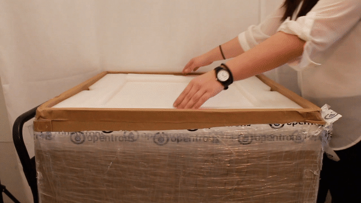
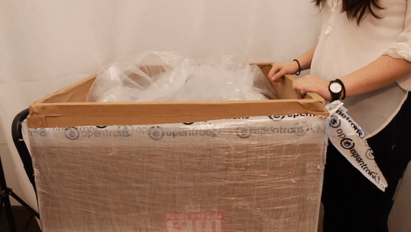
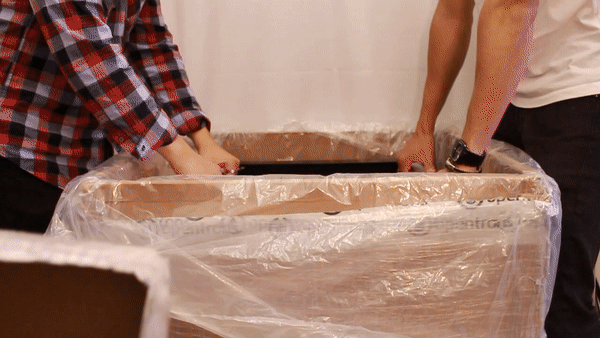
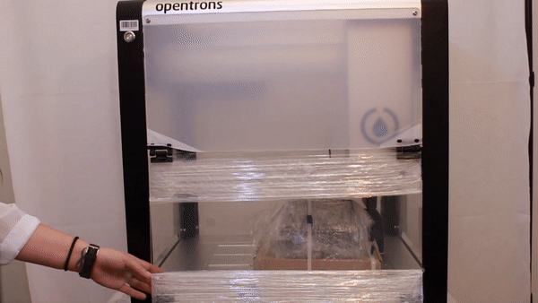
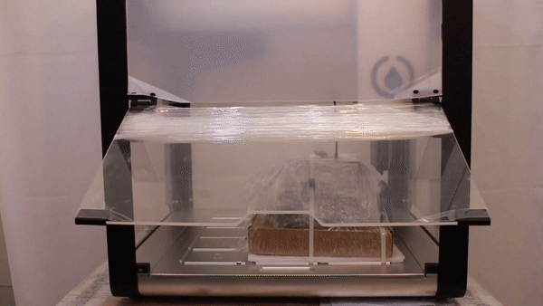

Desembalado.
Las instrucciones originales del fabricante puede encontrarlas en el siguiente enlace: https://support.opentrons.com/en/articles/2687501-get-started-unbox-the-ot-2
- Personal necesario
-
-
IN Técnico de instalación.
-
AY Ayudante.
-
- Herramientas/Material necesario
-
-
Tijeras y/o cutter
-
Nivel
-
Destornillador 2.5 mm hex (incluido)
-
Llave de 14mm
-
- Operaciones/Pasos
| Paso | Herramientas | Detalle, Fotos y/o diagramas |
|---|---|---|
1. Abrir la caja |
Tijeras y/o cutter |
Utilice las tijeras y/o cutter para abrir la tapa superior del embajale del robot OT2
|
2. Retire la tapa |
- |
|
3. Retire la capa superior de espuma. |
- |
Esto revela un panel superior que se instalará en un paso posterior. Colóquelo a un lado por ahora. No se ve en la imagen: el panel está unido a la espuma superior con cinta adhesiva.
|
4. Retire el protector de espuma grande. |
- |
 |
5. Desenvuelva la caja de plástico protector. |
- |
 |
6. Coloque y nivele el robot sobre una superficie de trabajo resistente. |
Nivel |
Con ayuda de algún compañero levantar el robot por su bastidor. El OT-2 pesa aproximadamente 30+ kg. Verifique la correcta nivelación del robot, accionando los mecanismos de sus patas para ajustarlo.  |
7. Abra la puerta del robot para quitar el plástico de burbujas. |
- |
Por favor, tenga cuidado de no rayar las puertas o paneles con sus tijeras.  |
8. Coloque a un lado las cubiertas de ventilación |
El plástico de burbujas que está debajo de las bisagras de la puerta encierra cubiertas de ventilación para los paneles laterales de su robot (paso 8 de "Desbloqueo del OT-2"). Colóquelas a un lado por ahora.  |
|
9. Retire toda la película protectora de todos los paneles. |
- |
|
10. Corte todas las bridas de sujeción de los accesorios a la cubierta |
Tijeras y/o cutter |
Use su herramienta de corte para cortar todos los accesorios de sujeción de cremalleras a la cubierta
|
11. Retire y abra su kit de accesorios. |
Destornillador |
Para revelar su juego de conductores. Use el destornillador hexagonal de 2,5 mm para quitar los dos tornillos que sujetan la cubierta No deseche estos dos tornillos.
|
12. Quite las bridas restantes. |
Tijeras y/o cutter Destornillador |
Levante la cubierta para quitar las bridas restantes, vuelva a colocar la cubierta en su lugar original y vuelva a apretar los dos tornillos.
|


|
En este momento es preciso comprobar que se ha recibido todo el material, usando para ello la hoja de comprobación |
| Notas |
|---|
Escriba en este espacio las notas e incidencias del proceso
. |
Inventario y documentación
Anote ahora, en la hoja de inventario de la instalación, los siguientes datos:
-
Número de serie del robot.